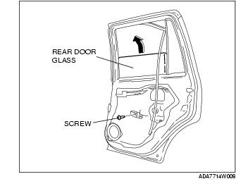

Rear door glass removal/installation
1. Fully roll down the rear door glass.
2. Remove the rear door trim.
3. Pull up the rear door weatherstrip and remove the screw.

4. Remove the bolt.
5. Remove the glass run channel from the rear door glass guide, then remove the rear door glass guide.
6. Remove the hole cover.
7. Lift the rear door glass to the position where the rear door glass installation screw is visible.

- • For vehicles with the power window system, connect the power window subswitch connector at the rear door trim, and lift the rear door glass by operating the switch.
- • For vehicles with the manual window system, lift the rear door glass using the regulator handle.
8. Remove the screws.
9. Lift the rear door glass up, then remove it while tilting it in the direction of the arrow.
10. Install in the reverse order of removal.